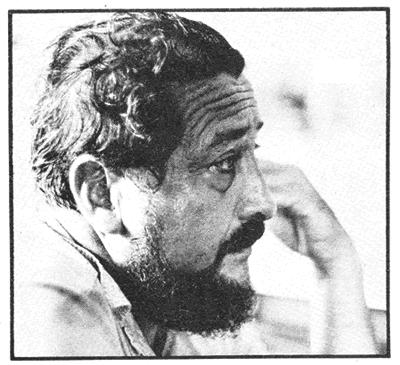
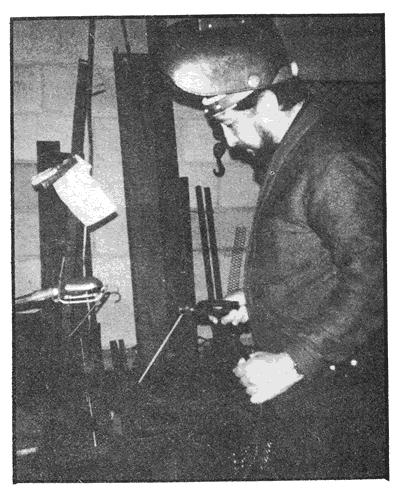
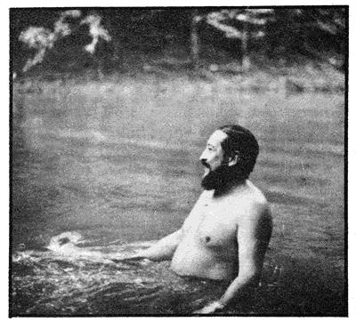
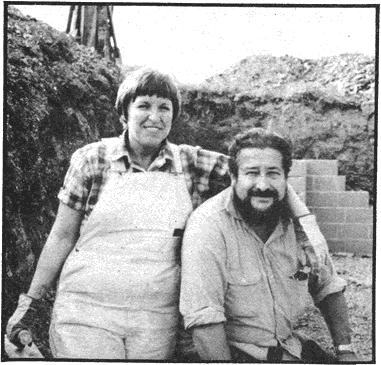
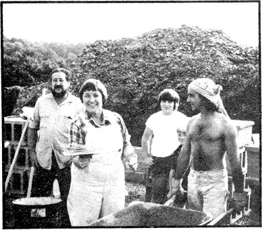

It was so easy back then-during the 1950's and early 60's-to be a Right Thinking Citizen of the United States. Easy because we all knew who wore the White Hats (yeaaa!) and who wore the Black Ones (boooo!).
"Capitalism"-which we naively defined as equal parts free enterprise, democracy, and the Winning of the West-was Good. "Communism " which was anything associated with Russia or Red China-was Bad
And "they" wanted to get "us" : And, despite the fact that God was on our side, they'd do it too if we didn't somehow "keep ahead" : (The day-and-night fear of Right Thinking Americans throughout the 50's and early 60's was that the United States would fall behind in some nebulous, unspecified
contest and quickly suffer a very concrete-though undefined-fate: "The communists I'll just come in here and take over.")
And so "progress"-which was already as American as mom, flag, and apple pie-became our secret weapon. Our be-all, end-all. ("Your future is great in a growing America.')
"New" and "improved" were Good while "conservation" and "little old bird-watchers in tennis shoes" were Bad ("Your future is Great in a growing America.
We all knew that. Just as we knew that "bigger" especially if we were measuring the good ole U.S. Government, business, or the family car-meant "better': ("Your future is GREAT in a growing America!")
And one of the reasons we knew these "truths" was because Big Business and Big Government hired some very clever and very talented people to convince us that we knew them. And one of those clever, talented people. was Karl Hess.
Back in 1964, Hess was an important public relations man for what Dwight D. Eisenhower had already labeled the `Military Industrial Complex': As a speech writer, aide, and one-man think tank for Presidential candidate Barry Goldwater, Karl was the intellectual darling of the Republican Party (Goldwater's famous observation that "extremism in the defense of freedom is no vice and moderation in the pursuit of justice is no virtue", was a Hess invention). And, while other hawks of the time occasionally advocated hitting either Russia or China with atomic weapons before the country in question could throw a bomb at us, young Mr. Hess favored immediate, pre-emptive nuclear strikes against both Russia and China.
Karl Hess, in short, was the truest of the True Believers in 1964's upwardly mobile, upper-middle-class, uptight America. He dressed conservatively. Lived in a fashionable Washington, D.C. suburb. Wrote speeches for every major Republican spokesman. Was the idol of his country club set.
But that was a long time ago. Today, Karl Hess is ,a6 raggedy homesteader in the hills of West Virginia. So turned against the "bigger is better" Military-Industrial government he used to shill for that-for the past eight years-he has refused to pay any income tax at all. Which largely explains why Karl and his wife, Therese, now eke out a subsistence living by bartering his welding and her typing for the items they can't produce on their small piece of land.
Gone are the conservative business suits. Gone is the fashionable suburban home. Gone is the country club membership. In their place are bib overalls and a still-under-construction house that the Hesses are putting together from salvaged materials with their own hands.
And has Karl's political and economic turnaround impressed, persuaded, or worried his old right-wing, "business as usual" buddies? Not especially. It has embarrassed them though. Because Hess hasn't been content to just live his new ideals: He had to write about them too. And his book (Dear America, $7.95, William Morrow & Co.) which explains exactly why he changed from right to left, big to little, war to peace-became one of last summer's bestsellers. Thereby turning Karl Hess into a rather annoying thorn in the side of the same people that he once elevated to power ("But Martha, Barry Goldwater's old speechwriter just can't say things like that!' .
It's interesting to note, on the other hand, that Barry Goldwater himself who still carries the right-wing conservative banner and carries it proudly has remained cordial to his old aide. Has, in fact, even agreed with some of Karl's new views!
What's going on here anyway?
In an effort to answer that question, THE Mother Earth News recently sent Anson Mount to visit the 10-acre Hess homestead "nestled in a sharp bend of West Virginia's Opequon Creek" : There he found Karl ("a gentle, good-natured bear who-with his beard, ample waistline, and bib overalls-looked as if he had just stepped out of an 1870 daguerreotype') and Therese ("a hearty and handsome woman who seems capable of doing everything better than anyone else') slinging mortar and laying concrete blocks with the help of a half dozen, enthusiastic, Huckleberry Finn-type children.
"After an afternoon of heavy labor," says Anson, "we all walked down to the creek and went skinny-dipping in an old swimming hole straight out of the deepest memory of anyone who ever spent his or her childhood in the country. There was a rope-and-plank suspension bridge nearby, gigantic sycamores leaning over the stream, dragonflies flitting above water so clear it sometimes seemed invisible, and the smells and soft hum of late summer hanging in the air.
"Later, back at the farmhouse Karl and Therese live in while building their own home, everyone pitched in to fix a supper of barbecued pork chops, corn on the cob, and salad which we ate in the front yard as darkness fell and a blaze of stars lit the night sky. Throughout the preparation and consumption of the meal, Karl kept us in stitches with hilarious comments about everything from soup to Pentagon nuts. "Once the dishes had been washed and Therese and the neighborhood children had retreated to the living room to play flutes and sing, Karl and I began our conversation at the kitchen table in the light of a kerosene lamp. "
PLOWBOY:Karl, everyone familiar with your career is intrigued by the switch you've made from traditional right wing conservatism to the New Left yet your book, Dear America, is a fervent call for a return to what can only be described as "Old-Fashioned American Values". Have you really changed so much?
HESS: No. I still believe in the same' things I've always believed in.
PLOWBOY: Which are?
HESS: Individualism. Self-reliance. Decentralization. Individual responsibility.
PLOWBOY: Those seem to be rather strange commodities to expect from the left.
HESS: Maybe so. But I'm no doctrinaire liberal. I don't now believe in the welfare state any more than I once really believed in the warfare state. I'm still holding out for the same old values I always supported the only difference is that I've changed my mind about the identity of the good guys and the bad guys. The New Left now seems to me to be espousing the causes that the Old Right once stood up for: individual responsibility and self-determination.
PLOWBOY: And you no longer feel that the right ran deliver such values?
HESS: No. Not since it was captured by corporate capitalism. The right still talks about self-reliance and free enterprise and individualism, you know, but it delivers something else entirely. It delivers bureaucracy and collectivism.
Corporate capitalism, in fact, is the worst enemy that free enterprise currently has in this country. To be quite blunt about it, the big guys are very deliberately using our "free enterprise" system to stamp out the little guys. But don't take my word for it, look at the statistics: There are fewer and fewer independently owned businesses--per capita-here in the United States every day.
PLOWBOY: Is there any similarity between this pressure being exerted by America's big businesses and, say, the collectivism of Soviet Russia?
HESS: Certainly. They're much the same. In the Soviet Union, the economy is developed under the ownership of a bureaucracy which shot its way to power, while in the United States exactly the same pattern exists except that our collectivists just buy their way to power. In either instance, the final result is the same: You owe your loyalty to the collective unit the corporation or the state, as the case may be. You're subordinated to its plans and processes.
There's no essential difference in the kind of world that either the large corporations of the U.S. or the collectives of the U.S.S.R. would impose on us. Back in the thirties, in fact, Jim Burnham wrote a book, The Managerial Revolution, in which he said that a DuPont bureaucrat could join a planning commission in the Soviet Union and never even know he'd changed jobs!
PLOWBOY: And the point is ?
HESS: The point is that bigness just doesn't work in business, government, or any other kind of organization. Capitalist or communist. Bureaucracy always screws the little guy it always makes his life worse instead of better. And it always gets in its own way.
Look at our own armed forces if you want a textbook example of how much better decentralization can be than central planning. We used to win wars, you know back when John Wayne, chief petty officers, and sergeants ran our Army and Navy from the bottom up. That's the way we did it in World War Two-the one I was in-and we could have beaten Mars if its team had shown up. We hung loose, we had a lot of fun, we were tough, and we won.
By the time we got mired down in Vietnam, though, the American military establishment no longer expected its troops to think for themselves out in the field. Everything was directed by bookkeepers back in the Pentagon somewhere. The Defense Department had become a gigantic blundering bureaucracy. And our armed forces had gone to pot:
Unfortunately for us, however, the Viet Cong were still doing things the way we had done them thirty years before. They were organized from the bottom up. Their guys-who each only carried something like sixteen rounds of ammunition and a little bag of rice-could get in and out of a tight situation a dozen times while our soldiers were still waiting for an air strike or a hot meal to come up from behind. And you can't beat people like that the way we were fighting. You can't beat that kind of small-scale organization. We could have fought the V.C. with our bloated bureaucracy for a hundred years and still never won.
PLOWBOY: I know. You presented that argument quite well IN Dear America. Just as you showed that our government and business establishments-which currently emphasize size over everything else-are, for this very reason, failing miserably in most of the endeavors they undertake.
HESS: Sure. Take food production, if you want another example. There simply is no real efficiency in the ULTRA- LARGE production of most foodstuffs. It appears to be more efficient to squeeze twenty little farmers off the land, lump their small spreads into one big corporate farm, and then work it with giant machines and heavy applications of fertilizer, pesticides, and irrigation water. But, in real terms, it's not more efficient at all. Quite the contrary. That whole collective agribusiness approach to farming is extremely wasteful especially of the fossil fuels which go into the manufacture, distribution, and maintenance of all the equipment, fertilizer, and chemicals that it needs. And, as we know, those fossil fuels are now getting very scarce and increasingly expensive. What will agribusiness do when they're gone?
PLOWBOY: But Earl Butz says
HESS: Well (chuckle), Earl Butz is an idiot, so we don't count him. He says things such as, "We should have big collective farms like the Soviet Union."
Butz once wrote a piece, you know, for the Department of Agriculture yearbook explaining why we can't have small farms anymore because they're inefficient. This was at the same time that the same department was publishing a magnificent study that showed that when farms get bigger than somewhere between 400 to 1,000 acres-depending on what you're growing-you have to duplicate everything. THEN you have to add an expensive management structure and real efficiency goes downhill from there.
The Department of Agriculture is not alone in this finding, by the way. The World Food Organization, M.I.T., and other groups have made study after study of the situation and none of them can find any real efficiency in large-scale food production.
PLOWBOY: Yet Earl Butz, the current head of the U.S. Department of Agriculture, still wants us to duplicate the large farms of the Soviet Union.
HESS: Earl Butz and Nelson Rockefeller and the other collectivists who believe in bigness in everything. And that approach does not work. Big agriculture simply does not work as the Russians have amply demonstrated. But then (soft laugh) the Russians can't do anything right, anyway.
PLOWBOY: You agree with Schumacher, then, that "Small is Beautiful".
HESS: Small-scale organization of all human activities is the inevitable wave of the future.
All our current institutions-government, business, social are like dinosaurs. They've grown and grown until they're so ponderous and unwieldy and bogged down in bureaucratic paper shuffling, they can't even fulfill the simplest tasks. And, like dinosaurs, as long as the climate is favorable, they'll keep on dominating the landscape and keep on growing. But the climate is changing in this country, and changing fast. There's some cold winds blowing out of the north. We don't have unlimited low-cost energy to squander anymore and we can no longer count on an unlimited flow of inexpensive raw materials from backward nations. And most important of all, the American people are wising up. They're demanding an end to things such as pollution and consumer rip-offs.
Now this is only the beginning. When the real crunch comes, the dinosaurs won't be able to adapt they'll die of their own ponderous inertia. And their place will be taken by small-scale organizations made up of people with a sense of individual responsibility, because such organizations and such people will be versatile enough to adapt.
PLOWBOY: I'd like to believe that.
HESS: You don't have to believe it you can already see it taking place all over this country. Our economic system is breaking down so rapidly that people everywhere are starting to rediscover more primitive forms of social organization. Cooperative forms of organization. Food co-ops, action groups, community banks, and taxpayers' revolts are springing up everywhere in both the city and the country.
There's a super-conservative taxpayers group, for example, over in the next county. It's made up of farmers and community leaders and it's advocating participatory democracy. Now this came right out of their own experience: they don't have any militant left wingers over there. They just know that if they can't control the political decisions in their own locality, they're helpless.
It's the same way now with the miners around here. They've got a wildcat strike going because they don't care what Arnold Miller says anymore. After all, Miller is only the president of their union while the miners are the union.
I see this movement-this insistence on controlling their own destiny-showing up more and more out here among the country residents where I live. I guess that's quite natural in a place like West Virginia, though, because the people here are used to being citizens. This is not a law-and-order state where the average man is just a subject and the police tell him what to do. Out here, the people don't just obey the law they make the law.
PLOWBOY: You're convinced, then, that the developing trend toward decentralization in our society is coming from the little guys. It's a spontaneous movement of millions of people from the bottom up, rather than being directed by any "leaders" from the top down.
HESS: Oh it's always tempting to think that today's social change is being led by a few fancy people like me-rich guys who've become poor guys-because that's sort of sensational. It's the gaudiest form of change. But it's only a very, very small part of a much larger movement that has already started and which gains a great deal of strength every time a plant closes down and three hundred people get laid off or we make another monster wheat deal with Russia and the price of bread goes up or the man in the street learns that yet another industrial by-product causes cancer. It's tens of millions of little guys all over the country-banding together to gain more direct control over their lives on a local level-who are making this revolution not just a few big city dropouts like me.
PLOWBOY: Yes. You are a big city boy, aren't you? Tell us how you got from there to here and start at the beginning.
HESS: Well I was born in Washington, D.C., and I've spent virtually all my life there. It's my hometown and I have a lot of affection for the place and the people who live there except, maybe (soft laugh), for some of the yo-yos on Capitol Hill and in the Pentagon.
PLOWBOY: Go on.
HESS: I was an only child. My father was a multi-millionaire type a good tennis player, a socialite, and a lecher. My mother was and still is-a remarkable woman who left my father as soon as she could and got a job as a switchboard operator. So I've always gotten a great deal of pleasure from knowing that if she hadn't been a woman of such moral integrity, I'd have been a rich kid. That knowledge was quite comforting as I grew up. It gave me a secret strength to draw on whenever the other kids were putting me down.
PLOWBOY: You seem to admire your mother very much.
HESS: I certainly do. She's the best lady in the world. She taught me how to read, which is a hell of a lot better than having money. She even let me leave school when I was 15, because I found it so dull. And that was the biggest mistake of my life: I waited too long. I should have quit when I was ten. I doubt that a school can teach a child anything after the age of eight or ten that he or she can't learn better at the public library.
PLOWBOY: Your mother must have been quite lenient.
HESS: She was just great. Actually, she was a very strict Catholic-a daily communicant-but when I came home one day and told her I'd been thinking about this religious business
and decided I was an atheist, she didn't get upset or send for the exorcist or anything like that. Which was kinda nice because I haven't made a career of being an atheist. I just am one.
PLOWBOY: Are you anti-religious?
MESS: Not necessarily. I've met some awfully nice Christians. I used to think that was a contradiction in terms (chuckle), but-since moving to West Virginia-I've met several people who go to church every Sunday and who don't steal. So I've concluded that you can maintain a high moral standard despite the handicap of being a Christian. But I've just noticed that in this area (soft laugh) I haven't observed this anomaly in very many other climates.
PLOWBOY: What did you do after your mother let you quit school?
HESS: I continued to read a lot. And I went to work for the Mutual Broadcasting System. The brass there didn't know I was only 15 and they hired me to write Fulton Lewis, Jr.'s, news program. That was a shame in a way because I was interested in chemistry at the time and I had figured out a way to get into M.I.T. without a high school diploma. And then I wrote this damned radio script as a test and Mutual hired me on the spot. And it was so easy! I thought to myself, "Why should I go to Cambridge and spend four years learning to be an industrial chemist when I can write for an hour a day and spend the rest of the time in the library?"
PLOWBOY: Did your employers know you were only 15?
HESS: No, but they found out after about six months when I was sent downtown to meet some hotshot and got arrested for double parking. Although the police were amused to discover that I was too young to be driving an automobile, Mutual Broadcasting didn't think the matter was very funny. My superiors dug out all the news scripts I'd written and went through them to make sure they weren't contaminated with some sort of infantile corruption.
See, that was when I learned that nothing makes any difference to bureaucrats except official forms. Everything was OK as long as they didn't know I was only 15 years old but when they found out, the whole place collapsed. It's a good thing that nobody in the Atomic Energy Commission ever learned that Albert Einstein was a failure at arithmetic.
PLOWBOY: Where did you go after leaving Mutual?
HESS: To a little newspaper in Virginia that didn't give a damn about my age. Anyone who'd work for six dollars a week was all right with the guys who ran the place. And I got to be a city editor, sports editor every kind of editor while I was there.
I stayed with that paper until I was 16 because-and this is really wild-back then, anyway, at the age of 16, you became official. When you were 16, you could go anyplace. So I went to work for a bigger newspaper, and kept on moving until-by the time I was 18-I was assistant city editor of the Washington Daily News. By then, thank goodness, people had stopped asking me how old I was because-I'm not sure-there may be a law against being an assistant city editor when you're only 18.
Well, anyhow I lost that job when I refused to write an obituary for Franklin Roosevelt. I thought he was the first real social fascist on the North American Continent and, when he died, I stayed out all .night celebrating our liberation. My superiors, of course, didn't share those opinions and they fired me.
But I didn't care. At that time, I could get a job with any paper in town. So I went to the Times-Herald then ran through all the other newspapers in Washington. Eventually I wound up as news editor of Aviation Weekly. That's where I really started getting interested in technical writing and where I developed a love for flying. I even got a pilot's license and all that stuff.
PLOWBOY: When did you first enter the rather specialized field of political writing?
HESS: Shortly after Tom Dewey lost his second Presidential election. That was 1948, and I was asked to write some speeches for the Republican National Committee.
Now this was the second great revelation of my life. Because while it's easy to be a journalist being a speech writer-man!-that's real tall clover. You don't have to do anything to write speeches for politicians. You don't have to know anything. You don't even have to think. All you have to do is be glib and invent great phrases. Historic phrases.
You see, all politicians want to go down in the history books. Right? And history books are written, by and large (chuckle), by idiots. And idiots look for meaningless but good-sounding phrases.
That's why all political administrations have to have slogans. All except the good ones, that is. The good ones don't need slogans. Like what was George Washington's administration called? Or Jefferson's? Madison's?
PLOWBOY:So you don't have to be a good writer to turn out political speeches?
HESS: Oh, you have to be a very good writer but you don't have to be very smart. As a matter of fact, if you put too much content into the speeches you'll get yourself in trouble.
A good political address, you see, should contain only one thought. Because that's about all the audience can handle. And what's so profound about coming up with a political program anyway? Ask any 16-year-old kid to give you three sensational ideas for what the government should do, and he or she will come back with the same answers as anyone else. So what you need in a political speech is great phrases. Since every politician says roughly the same thing, each one is judged by history merely on the basis of how well he or she says it.
So I found that putting together political speeches was the ultimate easy berth for a writer. It's also delightful because it gives you power along with everything else.
PLOWBOY: How long did you write these speeches?
HESS: I don't know centuries. Until 1964. Part of that time, though, I did earn a respectable living as press editor of Newsweek and by editing The Fisherman.
PLOWBOY: For whom did you produce your political speeches?
HESS: Richard Nixon, Gerald Ford, Dwight Eisenhower, Barry Goldwater just about every major Republican of the 50's and 60's. I was Goldwater's principal writer in the '64 campaign. I produced a book for Melvin Laird and speeches for several now-anonymous Secretaries of Defense I don't even remember their names. I even wrote an address for Hubert Humphrey once, despite the fact that he was-and still is-a Democrat. We were both working with a non-partisan political research service at the time a sort of think tank.
PLOWBOY: What would have happened to you if Goldwater had won the Presidential election in 1964?
HESS: I wanted to be Deputy Secretary of Defense for International Affairs because, back then, I was a very dedicated Cold War advocate. And if I'd gotten the job, I would have argued for a pre-emptive strike against both the Soviet Union and Red China.
You see, at the time a lot of Air Force theoreticians wanted to blow China off the map because otherwise-they reasoned, quite sensibly it seemed to them-China would inevitably become the world's foremost nation in industrial production.These militarists' judgment was as goofy as usual, of course, because they were evaluating the Chinese by American standards. They really didn't understand that the Chinese don't want to be Number One they just want to be free. In fact, until very recently, China has sacrificed industrial growth for agricultural production.
Well, anyway I was listening to the wrong advisors at the time and-if I had gotten the job I wanted-I'd have pushed the Cold War as far as possible. I also probably would have used every bit of power I inherited to have the FBI harass and arrest the very people who are now my best friends!
This is all quite ironic, of course, because I really haven't changed that much. It's just that-until sometime after Goldwater lost the '64 election-I never listened to what the New Left people were saying. The first day I did pay attention to their arguments, however, I changed my mind.
PLOWBOY: How could the New Left suddenly turn your political thinking so completely around?
HESS: They had done their homework. Their reasoning was irresistible.
PLOWBOY: But didn't you have access to their thoughts all along?
HESS: No. It's astonishing, but when you circulate in the
political channels through which I moved, all your information about the left comes directly from the Federal Bureau of Investigation. And the FBI, as far as I can see, hasn't learned anything new about left-wing politics since the Bureau was founded. It's still operating on suppositions that were obsolete in 1925. So the FBI gives you a version of reality that absolutely cannot be believed only most politicians do believe it.
PLOWBOY: So no matter what the FBI might say, you now think that some elements of the left are a lot closer to the ideals of our founding fathers than most of us will admit.
HESS: When you get right down to the basic issues-the questions of individual responsibility and whether or not we should stick our noses, and our guns, into other countries' business-you'll find that the New Left has a great deal in common with Robert Taft and other old-fashioned American conservatives. There is a definite moral confluence between the Old Right and the New Left. And any right-winger who's fair and dispassionate about the matter will admit it.
PLOWBOY: Give me an example.
HESS: OK. Even though I was going through personal changes by that time, I was still Barry Goldwater's speech writer when he ran for re-election to the Senate in 1968. I was a member of the leftist Students for a Democratic Society by then, and Goldwater knew it but he didn't give me a hard time because he's a tolerant, open minded man.
So one day I read him the section on foreign policy in the Port Huron Statement-which is the founding document of the SDS-and Goldwater said, "That's really wonderful! Did that come from the Young Americans for Freedom?"
Now that was a laugh right there, because the YAF is a bunch of right-wing military groupies. Its members are not young, they're distinctly un-American, and they hate the concept of individual freedom they call it "license". What the YAF likes is order. Their idea of freedom is a hitch in the Army they all want to be lieutenant colonels or senators. Needless to say, they support the Pentagon a hundred-thousand percent.
PLOWBOY: What did Senator Goldwater say when you told him that the foreign policy statement he liked came not from the right wing YAF as he had supposed but from the leftist SDS?
HESS: Well, of course, he was stunned. But one of the great things about Barry Goldwater is that his thinking is not limited or directed by labels. And after a while he said, "I don't care who wrote that statement, it's right." A short time later, when he spoke at the University of Arizona, he began his address by saying, "I recently discovered that I have a lot in common with the anarchist wing of the SDS."
PLOWBOY: Were the authors of the Port Huron Statement anarchists?
HESS: Yes. And, curiously enough, it was the same faction that later became the Weathermen which seems logical to me. I'll bet you that half the original Weather people were old right-wingers who finally realized that they had been fed a big pack of lies about free enterprise and capitalism and their reaction was a violent one.
This new awareness of reality-although, thank goodness, it usually doesn't spark such a violent reaction-is, by the way, a growing trend among right-wingers. Here lately, I've even noticed some staunch John Birchers beginning to question the wisdom of laying down their lives to defend dear old Standard Oil, in the illusion that they're defending private enterprise. They're beginning to understand that corporate capitalism doesn't have anything to do with free private enterprise.
PLOWBOY: That's a big jump for a John Bircher to make almost as big as the one you've taken from speech writer for the Republican Party to the ideas you've been expressing here. That's one big trip, Karl. So big that I'm going to ask you to level with me and tell me-no holds barred-what really triggered your change in values. Did you read a copy of Chairman Mao's little red book? Were you kidnapped by rabid left-wingers and brainwashed for a month? What happened?
HESS: I bought a motorcycle.
PLOWBOY: You bought a motorcycle?
HESS: Yeah, and it completely cracked the social structure in which I lived. My neighbors were absolutely horrified. I wasn't rich enough to be eccentric, you see and in the suburbs you're not supposed to be medium-rich and ride a motorcycle.
Actually it wasn't just the bike that got 'em so much as the fact that I rode it wearing a suit and necktie. That really freaked 'em out. Nobody would talk to me for a long time they just kind of looked at me from behind the drapes as I went by. Finally a neighbor or two came over with concerned looks on their faces and said they really wished I wouldn't ride my bike anymore. It was all very childish.
PLOWBOY: Did you have a beard at the time?
HESS: No. Just the motorcycle which I rode all dressed up in a business suit and tie. I was straight as an arrow. So, after my "friends" had had their talks with me, I decided to push the issue a little: I stopped wearing the necktie.
And that was the end. When you dress funny-I mean by doing something really weird like wearing an open-collar shirt-out in the suburbs, you've had it. You're out. You simply are not taken seriously anymore.
You can be an alcoholic that's OK. You can be a thief, and your neighbors will just adjust to the idea. And that really happens, too every suburb has some sort of experience with this phenomenon. Someone will be arrested for a major crime-a white collar crime-and the people who live around him will still go to the country club with him and slap him on the shoulder and ask if he's going to beat the rap. And they'll point him out to visitors with admiration and say, "Ole Joe here got away with a big mortgage swindle."
But-at least in 1964-they wouldn't tolerate a guy who rode a motorcycle. Especially without a necktie.
PLOWBOY: And that social ostracism by your good Republican neighbors drove you into the arms of the New Left.
HESS: Well it wasn't quite as dramatic as all that. But, thanks to the incident, I saw for the first time-and very clearly-that my suburban neighbors didn't care whether or not I was capable or honest or loving what they cared about was how I looked. And I didn't like that superficial attitude.
So I went to live in the Adams-Morgan area of Washington, D.C., where I worked with the Institute of Policy Studies. This is a scholarly organization which is often attacked as left-wing. Actually, it's more akin to the New Left, which advocates a much more decentralized society than any other political faction.
Anyway, at the IPS, I began to work out the theories of small scale organization. We all knew that small groups could operate very effectively and I was trying to learn why. Which led me, after a while, to start putting together a community-oriented encyclopedia of science and technology that would attack the mythology of large-scale organization big business and big government-that has such an insidious influence on our culture.
PLOWBOY: Wait a minute. Weren't you going about your job the wrong way? I mean, you were trying to develop down-to-earth ideas and theories that ordinary, lower-income residents of AdamsMorgan could use in their day-to-day lives. Right?
HESS: Right.
PLOWBOY: Well, aren't scientific and technological concepts just a little bit difficult for the average citizen to handle?
HESS: No, not when you boil such logic down to its most basic form. We live in a world where all normally intelligent people use a very scientific approach in dealing with material things it's just that most of us don't realize it.
You have to be a scientist to function effectively nowadays. The car you drive has roughly the explosive potential of a whole box of artillery shells. When you turn on a water tap, you're working with hydraulics a science that was unknown until the 20th century. And look at the average kitchen. It's an alchemist's laboratory. You've got to use scientific methods when you handle such equipment or you'll kill yourself.
So it occurred to us that if we could show the people in our rather downtrodden neighborhood that they were already thinking scientifically well, maybe that fact would give them the confidence to think more for themselves and listen less to politicians who (chuckle) don't ever think rationally.
OK. So much for the tough one, science. Technology which is really just the application of mechanical principles to the work of making things-was even easier. We simply begged some space in an old warehouse, started a research and development organization called Community Technology, and began trying to find ways for our city neighborhood to become more self-sufficient. In food, energy in everything we used. But especially in food.
PLOWBOY: Your work, then, must have closely paralleled that done by the Adams-Morgan Institute for Local Self-Reliance. (See the Plowboy Interview with Gil Friend and David Morris in MOTHER NO. 36.
HESS: Oh yes. While the ILSR was starting a rooftop hydroponic garden on one building, Therese and I were hand-carrying a ton of dirt up to the top of another for a more conventional organic garden. We exchanged notes and decided that city dwellers could go either way. Raising vegetables in town is easy. You can do it in the middle of Manhattan.
On the other hand, it quickly became apparent to us all that you probably don't know any way to produce your own protein in Manhattan. Or in any other large city. So we put one of our group who was a chemist and knew a lot about fish-to work designing a system that would raise rainbow trout under high-density conditions in, say, the basement of a downtown apartment building. And then we built a few fiberglass tanks and filtered the chlorine out of our city water and bought some commercial trout food and we actually raised ourselves some trout.
PLOWBOY: Was the experiment successful?
HESS: Very! Our fish were healthier than any trout in any stream in the United States. We put in about two pounds of feed for every pound of meat protein we harvested and the fish-after cleaning-cost somewhere between 70 cents and $1.00 a pound to produce. I can't give you a more exact figure because we don't have the electricity bill yet and that-due to the pumps we used for aerating the water and the air conditioners we needed to keep the temperature-sensitive trout cool was a major expense.
But the project was a success. We proved that it's possible to raise about five pounds of trout per cubic foot of water per year. So you can produce a lot of fish in a basement.
PLOWBOY: Now that you've pointed the way, do you expect great numbers of city dwellers to start raising fish in their spare rooms?
HESS: That depends on their attitudes which, in turn, depends to a great extent on whether or not we allow today's welfare system to completely destroy the average citizen's sense of individual responsibility.
Washington is a very bad town in which to promote self reliance, you know, because Big Government is so pervasive there. It has a welfare program for everyone, and people are given money by the bucketsful. There are even summer programs that pay two and a half bucks an hour to school-age kids who do absolutely nothing they just sign in in the morning and out at night.
Now this isn't funny. One day, for instance, a teenager came to the Institute and asked if we had a job for him. When we asked what kind of work he wanted to do, he said, "I don't want work, I want a job." So we asked, "What's a job?" and he said, "That's where you give me money."
We have a generation of kids, you see, who've been economically corrupted by our government. And people like that-as we found out from bitter experience-find it impossible to spend a half hour twice a day tending a basement full of fish.
So we thought we'd fight this lethargy on a broader front by getting our Community Technology program introduced into the school system. eve actually- drew up pans to that end and took them to some of the largest foundations in the country.
PLOWBOY: What happened?
HESS: They were profoundly bored by the idea. One foundation's representatives only asked us one question: "How many of your staff are white?" When we told them that we're practically all white, they said, "Go away."
So there we were, living in a multi-racial neighborhood but because we had the stigma of being born white, we were dead in the water.
PLOWBOY: Did you and your wife leave Washington and move here to rural West Virginia because of the disappointments and social problems you've just mentioned?
HESS: Crime was the social problem that caused us to leave AdamsMorgan. We were robbed about once every two months during the years we lived there. The last time the thieves just tore the front door from its frame while we were out of town and took everything of value we owned except Therese's typewriter. They'd have probably taken that too if they hadn't found my target pistol first. In the world of thievery, you know, that's the jackpot.
Well, at least we still had the typewriter which was lucky, since that's what Therese uses to earn most of our income. So we said, "To hell with it, we won't stay here another night," and we threw what was left of our belongings into our pickup truck and drove out to the few acres Therese happened to own here in West Virginia. We rented this old farmhouse and began construction of a home and we've been here ever since. We love it. Our. neighbors are fantastic, wonderful people. We still go into Washington two days every week where Therese works as a freelance editor and I continue my work with Community Technology. But this is where we live.
PLOWBOY: It's certainly beautiful country for the establishment of a homestead and remarkably unspoiled to be so near the large eastern cities. Tell me, if you will, a little about that house you're building.
HESS: Therese drew up most of the plans and I designed the roof. It's going to be a unique dwelling, we think.
What we did was we dug a hole back into the side of a hill and we're laying cement blocks now to form the building's walls. Then we'll backfill those walls with dirt so the house will be insulated with earth. The roof will provide a rudimentary form of solar heat like a greenhouse-and we'll supplement that with wood stoves.
The lumber we're using came from an old barn, we picked up some secondhand roofing real cheap, and we're not spending anything for labor. We can't afford to. Virtually the only dollars we have are the ones that Therese generates with her typewriter.
PLOWBOY: Why are you so dependent on her income?
HESS: Well you might say that the U.S. Government and I are at odds. About eight years ago, based on my primitive belief that our government was no longer worth supporting, I stopped paying taxes. Naturally the Internal Revenue Service took a dim view of that and its people have apparently decided that I'm a one-man movement to overthrow the government.
PLOWBOY: Are you?
HESS: As far as I'm concerned, the federal government is overthrown because the Declaration of Independence clearly states that when a government gets to be intolerable, concerned citizens should abolish it. So I wrote a letter to the government saying that it was abolished. Interestingly enough, however, the Declaration of Independence has no current legal standing. The Constitution superseded it unfortunately.
At any rate, the Feds now have a 100% lien on my income and everything I own. I can't work for a salary. I can't have a bank account, a car, or a credit card. And now that my driver's license has expired, I've discovered that I'm no longer an official person. In the eyes of some of our bureaucrats, I simply don't exist.
But I'm not discouraged. I've applied for a learner's permit and, if all goes well, I'll soon be admitted back into the human race. This isn't as easy as it sounds, though, because-to get that learner's permit-I had to prove that I was at least if And how the hell do you prove you're 16, when you're 52? Fortunately, my mother had a birth certificate and I say "fortunately" because I doubt if the Powers That Be would have taken her word for my age. God, bureaucrats can be such a pain.
PLOWBOY: Agreed. But what can we ego about them?
HESS: Well their days are numbered, I'm quite certain of that. And not just because I want their days to be numbered.
Big Business and Big Government-the natural spawning ground of bureaucrats-can only thrive and grow when there are unlimited and easily tapped and inexpensive resources for them to devour. And we all-at least the rational among us-now know that we live in a finite material world. Our fossil hydrocarbons and magnesium and other resources are not unlimited, they're no longer easily tapped, and they're becoming increasingly expensive. Expensive to find, expensive to mine, expensive to process, expensive to transport, expensive to use, and expensive-even-to throw away or recycle.
Besides that, some of those impudent people in Bolivia and Jamaica and a few other little backward countries are getting uppity. Why, they're starting to expect to be paid for their tin and bauxite and other resources! And some of them have even decided to keep those raw materials for themselves instead of shipping them all away to the big corporations and the big nations of the world. Imagine!
So we're running up against the planet's physical limits in more ways than one and those limits are going to force us to change our lifestyle. It's gonna be "goodbye Big Business, Big Government, Big Everything" and "hello small-scale".
PLOWBOY: But will we have-do we have-the technology to make such a switch?
HESS: Of course we do. Modern technology is small-scale. If you want to see the most modern factory in the world, you don't go to Detroit you go to Roanoke, Virginia. There's a plant down there that a bunch of little old ladies could run. It's a bank of computers connected to an army of machine tools and the factory can be programmed to turn out any damn thing you want: gears, shafts, axles, you name it.
Or consider, if you will, one of the most basic of all industries: steel. There was a time when-if you wanted to produce high-quality steel efficiently-you had to do it big with open hearth furnaces that consumed tremendous quantities of space, fuel, and labor and which seriously polluted whole counties. But now-if you use the continuous slab casting and basic oxygen process-you can scatter small steel mills all over the country on a community level. Even the making of steel, in other words, can be adapted to small-scale production that individual communities can finance and which doesn't absolutely devastate the surrounding countryside.
Another example: energy. We're exhausting the easily exploited concentrations of fossil fuels at an extremely rapid rate and there seems little chance that nuclear power or any of the other centralized and easily manipulated "miracle" sources of energy now being touted by Big Business and Big Government are going to work. Which leaves the so-called "alternative" energy sources-wind, water, etc - all of which are directly set into motion by the sun.
The sun, as you know, is our prime powerhouse. The best source of energy we have. Solar power is abundant. It's free, and-as far as we're concerned-the main dynamo never has to be replaced, repaired, or rebuilt. It's also quite clear, at least to me, that solar energy is most efficiently gathered in small collectors. Big solar farms, for instance, cause major ecological problems in the areas under their massive collecting surfaces. And, of course, you run into transportation problems when you try to convert huge amounts of sunlight into other forms of energy in just one spot and then ship that electricity or whatever to all the hundreds of thousands of places you want to use it. Which means that the most practical way to handle solar power-which is the energy source of the future-is to collect it as close as possible to where you need it.
Or how about the production of minerals, which used to be very decentralized. If you ride around this area you'll find all sorts of little iron mines and coal shafts that were closed years ago simply because they were small operations. Their pick and shovel output wasn't-at least during the "bigger is always better" fifties and sixties large enough to compete economically against the machines of the big mines. But that's all changing now that some of the big operations are being worked out and now that we have so many unemployed people on our hands. The labor-intensive production of the little mines is beginning to look attractive once again at least for the local market.
And that's why I say that it doesn't matter whether you want to grow food, build cars, or make clothing. The technology is already here to do it on a decentralized, small-scale basis. And, as we enter an age of scarcity, that's the only way we're going to be able to supply our needs and wants.
PLOWBOY: And-I assume-whether we like it or not, this decentralization of the physical plant of our society will inevitably force the decentralization of all our institutions.
HESS: Absolutely. Form will follow function on a much larger scale than ever dreamed by the old Bauhaus school of design. Government, business-everything-will have no choice but to decentralize or vanish.
Naturally this change will not always take place easily. You can't expect all the elements of the Old Guard to give up their privileges and their power without at least an argument.
The federal government, for instance, will probably try to keep right on doing everything it does now. Despite that, however, it will become increasingly less important as people increasingly do more for themselves on a personal, family, and local community basis.
The power of the federal government, by the way, is likely to shrink most dramatically when the citizens demand the right to vote directly on the use of the taxes they pay. And you'll know that the little people have really won if the withholding tax-that device which allows bureaucrats to take money from wage earners before they even get their hands on it themselves-is ever repealed.
PLOWBOY: What about our cities? Will they all collapse during the coming decentralization? Will all their residents scatter in the countryside?
HESS: Of course not. What will collapse in the cities are the central governments. And, as City Hall goes under, the local neighborhoods will reappear. People who want to stay in our urban areas will be able to get along quite nicely in a closely knit neighborhood.
City people, in fact, can organize locally much easier than folks who live out in the country simply because they're closer to each other. Residents of urban areas can establish cooperative production and distribution facilities. They can set up community banks. And, as you know, our experiments in Washington's AdamsMorgan area have shown that even a densely inhabited, lower income city neighborhood can be very nearly food and energy selfsufficient.
PLOWBOY: Then despite your distaste for Big Government and Big Business, despite your sadness at the way we've raped the natural resources of this continent and the rest of the world, despite your differences with the Internal Revenue Service, and despite having your nose rubbed in the lethargy, crime, misuse of power, and other ills of our society despite all this, you're still optimistic about the future of the United States?
HESS: Yes. By and large, this is still a healthy country. Healthy because of the people who live here. Oh, we've got a few bad apples crooked politicians, people corrupted by the welfare system, and rich parasites who are loafers and high livers-but they're still not the majority. Go to any small town in America and you'll find that most of the people there are generous, trusting, honest, and hardworking they still have the virtues of their grandparents.
I haven't lived everywhere in the world, but I've traveled a lot and there aren't any people-anywhere-better than Americans. I'm willing to bet on it and I think that this is a glory of a place to live. I wouldn't want to be anywhere else.
|
 |
 |
 |
|
 |
 |
|